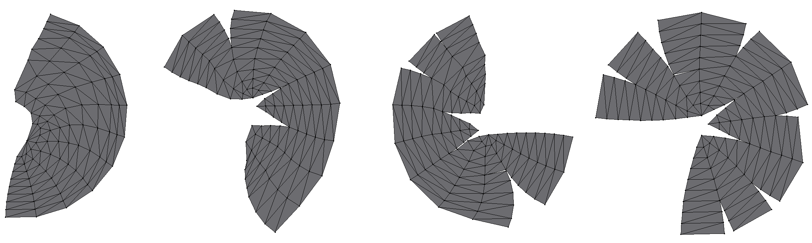
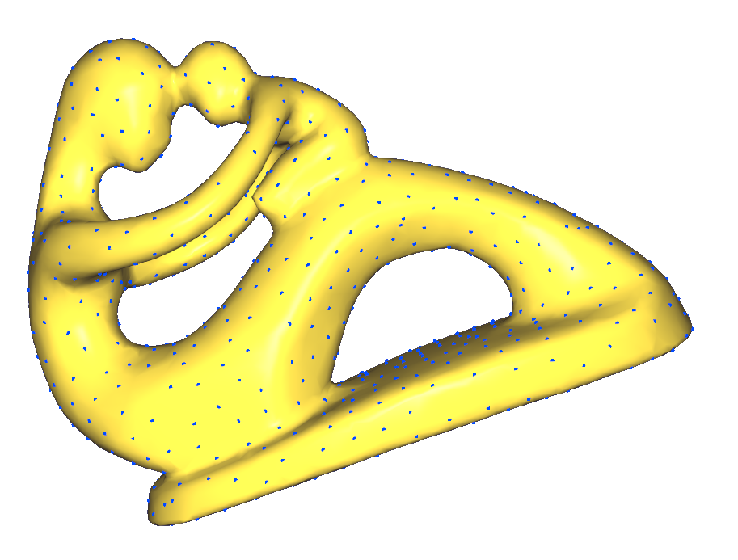
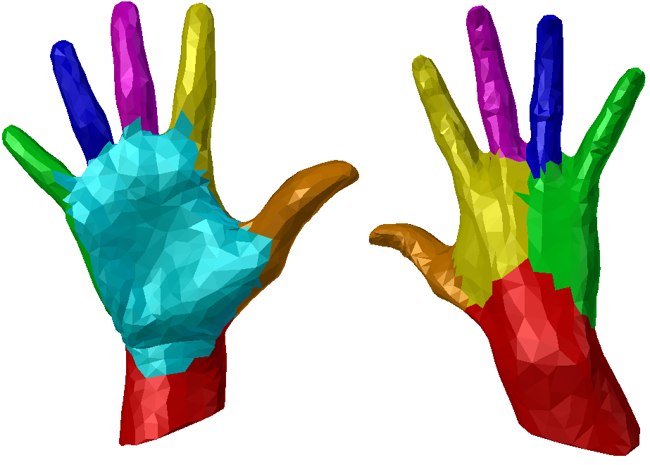

Finding a (bijective) mapping from an input mesh to a parametric domain.
Most notably, UV mapping (or mesh flattening), commonly used for texturing,
or polycube mapping, used as a pre-processing step for hexahedral meshing.

UV mapping of a semi-sphere with varying numbers of cuts.
Computational Geometry
The study of algorithms which can be stated in terms of geometry.
Real-world meshes are often comprised of hundreds of thousands of triangles,
making computational complexity a key issue.

Poisson sampling of "fertility" with limited time complexity using an octree.
Shape modelling
Modeling, simulating and processing digital representations of shapes and their properties,
ranging from mesh simplification to shape deformation.

Semantic mesh segmentation of hand model using data transformation and clustering.